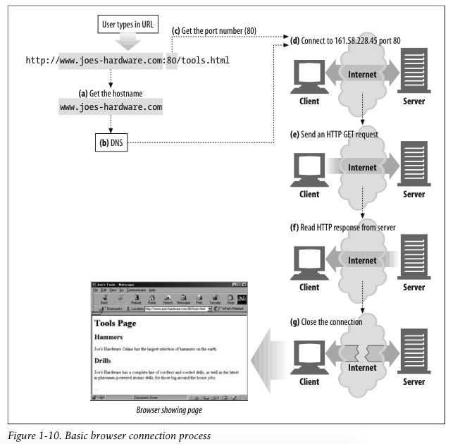
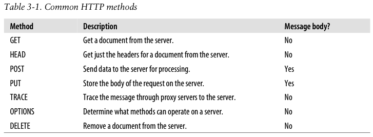

HTTP TCP IP 等的一些概念
前言
最近在看 ‘HTTP: The Definitice Guide’，这本书里关于 HTTP/TCP/IP 等的一些概念讲解的很贴切，而且很系统，更容易让人理解，这里摘录一些做翻译，便于以后查找。
翻译
Overview of HTTP > Connections, 13 页
在 HTTP 客户端可以向服务器发送请求之前，客户端和服务端需要通过 Internet protocol address(因特网协议地址，即IP地址) 和 port numbers(端口号)来建立客户端和服务器端之间的联系。
设置 TCP 连接有点像给公司办公室的某个人打电话。首先你需要拨通公司的电话，这一步让你找到正确的组织。接着你再拨通你想要找的人的分机号。（–steam comment–，这里把 IP 地址比喻成公司总机电话，而把端口号比喻成分机号）
在 TCP 中，你需要服务器电脑的 IP 地址和 TCP 的端口号，这个端口号与运行在服务器上的具体的软件程序相关联。
这种方式很好，但是你如何能够获取 IP 地址和 HTTP 端口号呢？还记得吗？！当然是用 URL 啊！我们之前说过，URL 是资源的地址，所以 URL 可以给我们提供拥有资源的机器的 IP 地址，这再自然不过了！我们来看几个 URL 的例子：
- http://207.200.83.29:80/index.html
- http://www.netscape.com:80/index.html
- http://www.netscape.com/index.html
第一个 URL 拥有机器的 IP 地址，’207.200.83.29’，以及端口地址，’80’。
第二个 URL 没有数字的 IP 地址，而是一个文本域名，或者称为主机名（“www.netscape.com”）。主机名相比于 IP 地址而言是一个更人性化的代号。主机名，借助 Domain Name Service （DNS），可以非常轻松地转化为 IP 地址，所以，我们又回到了这里。我们将会在第二章中详细讨论 DNS 和 URL。
最后一个 URL 没有端口号。当 HTTP URL 中没有端口号的时候，你可以默认端口号的值是 80。
通过 IP 地址和端口号，用户可以很容易地通过 TCP/IP 进行交流。图1-10所展示的就是浏览器如何通过 HTTP 来呈现一个简单的驻扎在远程服务器上的 HTML 资源。
下面是整个过程：
a. 浏览器从 URL 中提取服务器主机名。
b. 浏览器将服务器主机名转化为服务器 IP 地址。
c. 浏览器从 URL 中提取端口号，如果有的话。
d. 浏览器和服务器之间建立 TCP 连接。
e. 浏览器发送 HTTP 请求信息给服务器。
f. 服务器返回 HTTP 响应给浏览器。
g. 连接终止，浏览器展示文档。

关于 DNS 相关的文章，参考下面两篇
GET 和 POST 请求的不同点在这本书里可以看到一个：
GET 没有 Message Body 而 POST 有
